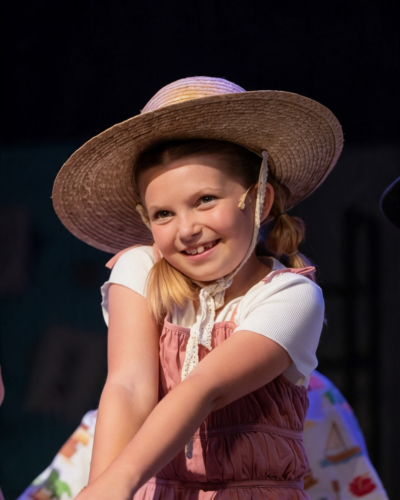

Representation & casting
Wynter Pearce
Actor · Singer · Dancer
- Age
- 9
- Height
- 4’4"
- Hair
- Strawberry blonde
- Eyes
- Blue
- Based in
- Central California
- Representation
- Seeking theatrical & commercial representation
Wynter went on stage at two years old in The Nutcracker and has been performing ever since — seven years of theatre, dance and singing, including a twelve-show run as Tiny Tim in The Little Town of Christmas and a solo singing part in Dare to Dream.
She works easily in front of a live audience and on camera, takes direction quickly, and brings natural comedic timing and genuine enthusiasm to a scene.
Selected credits
Stage
- Dare to Dream — solo singing part · 2026, age 9 · Golden Chain Theatre
- The Little Town of Christmas — Tiny Tim, 12-show production · 2025, age 8 · Golden Chain Theatre
- Willy Wonka — Oompa Loompa · 2024, age 7 · Golden Chain Theatre
- The Wizard of Oz — Lollipop Kid · 2021, age 4 · Historic Tower Theatre
- The Nutcracker — Polichinelle, Mother Ginger scene · 2019, age 2 · Historic Tower Theatre
Training
- Quarter Notes JRs — advanced singing group, live shows · 2024
- Quarter Notes — three-week singing programme · 2022
- Dance Studio 2 — jazz and ballet training, live shows · 2023
- Break the Barriers — choreographed dance productions · 2021
Special skills
- Acting · Singing — solo and ensemble · Dancing — jazz, ballet, competition
Watch
Enquiries
Parent-managed contact
All casting, representation and production enquiries go directly to Wynter's parent, Kristin.
- PearceKristin4@gmail.com
- Phone
- 559-676-1016
- @familyintheforest
Kristin Pearce · Wynter's parent · PearceKristin4@gmail.com · 559-676-1016